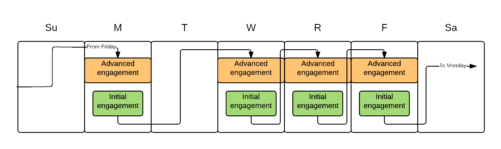
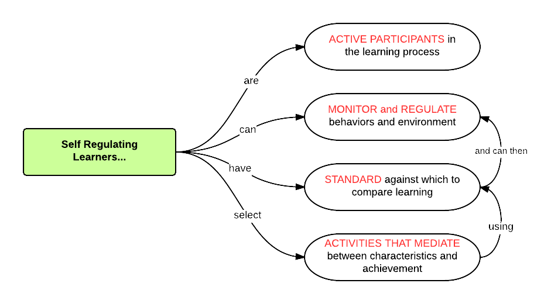

Flipped infrastructures for inquiry-based learning
Legacy of R.L. Moore Conference, Austin, TX, 25 June 2015
Robert Talbert, Grand Valley State University
rtalbert.org • @RobertTalbert • +RobertTalbert
Central Question:
What does flipped learning have to offer IBL?
TL;DR
Quite a lot actually
Flipped learning provides cognitive structure that supports IBL
Flipped learning provides design structure that supports IBL
Flipped learning and IBL are orthogonal and mutually supportive.
What are the ideal outcomes of IBL?
Curiosity
Initiative
Persistence
Collaboration
What are the design needs for these outcomes?
Stimulating course activities
Structure for learning how to learn
Incentives for collaboration and persistence
Failsafes for failure
What is flipped learning?
Flipped learning is a pedagogical approach in which direct instruction moves from the group learning space to the individual learning space, and the resulting group space is transformed into a dynamic, interactive learning environment where the educator guides students as they apply concepts and engage creatively in the subject matter.
Flipped Learning Network
Flipped learning design

Class/post-class focus on stimulating activities, done collaboratively with failure tolerance
Pre-class focus on independence, initiative, self-determination
Types of structure from flipped learning that can support IBL
Self-Regulated Learning

Paul Pintrich, “A Conceptual Framework for Assessing Motivation and Self-Regulated Learning in College Students”, Ed. Psych. Review 16(4):385--407 (2004)
Independence / Interdependence
A changed narrative about how to "do school"
Assessment structures
Formative
Summative
Pre-formative
A shameless plug for specifications grading
Why all this structure matters
Students are not expert learners
Students suffer from learned helplessness
Students need structure to "level up"
Flipped learning :: Operating system
IBL :: Software
What to do at this conference
Connect up with other flipped learning people
Come to the structured discussion time tomorrow at 4pm in Salon AB
Images:
No modifications were made to these photos.